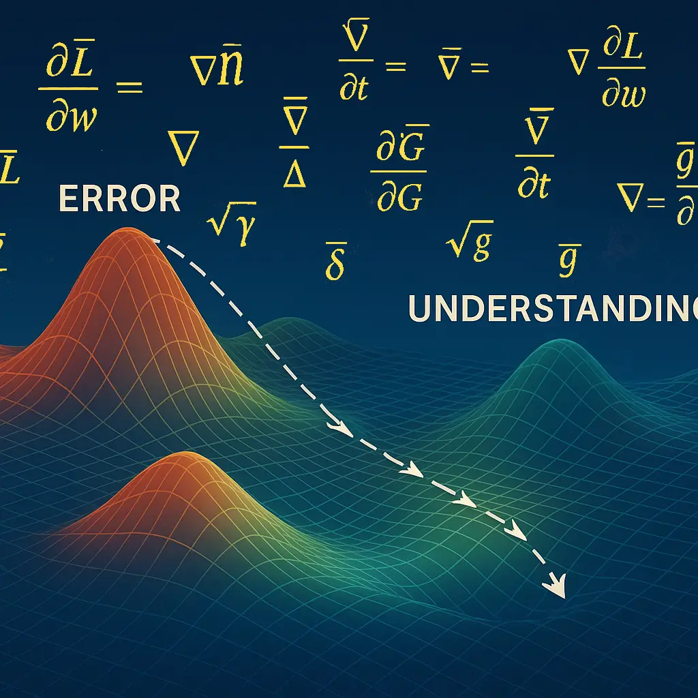

How Large Language Models (LLMs) Learn: Calculus and the Search for Understanding

When you interact with a large language model (LLM) such as ChatGPT or Claude , the model seems to respond instantly relative to the question’s degree of difficulty. What’s easy to forget is that every word it predicts comes from a long history of learning where billions of gradient steps have slowly sculpted its understanding of language.
Large language models don’t memorize text. They optimize it. Behind that optimization lies calculus. I’m not referring to the calculus you did with pencil and paper. I’m talking about a sprawling, automated version that computes millions of derivatives per second.
At its heart, every LLM is a feedback system. It starts with random guesses, measures how wrong it was, and then adjusts itself to be slightly less wrong. The word “slightly” in this context is the essence of calculus.
“Each gradient step represents a measurable reduction in error, guiding the model toward a more stable understanding of language.”
This post explores how derivatives guide learning, how gradients shape understanding, and how every improvement in an AI’s intelligence begins with a single slope on a vast mathematical landscape. Think of that landscape as a terrain of error and knowledge: each ridge represents mistakes, each valley represents improvement, and the model’s journey is one of descending that terrain toward understanding itself.
The Role of Calculus in Learning
In the simplest terms, calculus gives LLMs the ability to improve. Specifically, it gives them a way to measure change.
When a model produces an output, it compares that output to the correct answer and computes a loss — a single number representing error. But the key question is: how should each parameter change to make that loss smaller next time?
That question is answered by derivatives. A derivative tells the model how sensitive the loss is to a small change in one of its parameters. If the derivative is positive, the model nudges that parameter down; if it’s negative, it nudges it up.
Repeat this process across billions of parameters, and what emerges is learning.
The Landscape of Loss
You can think of training a model as trying to find the lowest point in a vast, invisible landscape, a mathematical surface defined by all possible combinations of parameter values.
Each point on that surface has a height (the loss). The model’s job is to find the valleys — where loss is minimal and predictions are most accurate.
Calculus provides the map. Gradient descent is the compass.
In one step of gradient descent, the model computes the slope (gradient) of the loss function with respect to its parameters, then moves a small step downhill. Too large a step and it overshoots; too small and training crawls.
The process is like sliding down a foggy mountain guided only by the steepness underfoot. But given enough iterations, it converges.
Backpropagation: The Chain Rule in Action
For models with many layers, such as transformers, each parameter affects the output indirectly through multiple stages of computation. To determine how a change in an early weight influences the final result, we apply the chain rule, the backbone of backpropagation.
Backpropagation is the algorithm that carries error signals backward through the network, layer by layer, computing derivatives at each stage.
In mathematical shorthand, if L is the loss and W represents the weights, we compute the following for every parameter. The result is a gradient that tells us how much each weight contributed to the total error:
\[ \frac{\partial L}{\partial W} \]
The model then updates each weight according to the rule below, where η (eta) is the learning rate, representing the size of the step taken down the loss gradient:
\[ W_{new} = W_{old} - \eta \frac{\partial L}{\partial W} \]
Optimization as Controlled Chaos
Training doesn’t happen neatly. Real-world loss landscapes aren’t smooth bowls; they’re chaotic terrains full of cliffs, ridges, and deceptive plateaus.
That’s why optimization relies on heuristics like momentum, Adam, and RMSProp — refinements that stabilize learning by dampening oscillations and adapting step sizes.
These techniques don’t change the calculus itself. They refine how it’s applied, balancing speed and stability so that models reach better minima without falling into traps.
If linear algebra gives LLMs their structure, calculus gives them motion.
Learning as Compression
In a sense, every gradient update compresses experience. The model takes the difference between its prediction and reality, distills that error into a small numerical change, and encodes it into its parameters.
Over billions of updates, those tiny corrections accumulate into knowledge, forming patterns of weights that capture the statistical structure of language, code, and reasoning.
The calculus disappears, leaving behind intuition embedded in numbers.
From Mistake to Meaning
All machine learning begins in error. The genius of calculus is that it makes error useful.
Every misprediction becomes information about direction — where the model should go next.
That is what makes AI training so remarkable: it doesn’t eliminate mistakes; it learns from them.
So when a large language model finishes your sentence, it’s not recalling a rule or retrieving a fact. It’s the product of countless adjustments, each one a derivative of failure, converging toward meaning.
Closing Thoughts
The first two parts of this series explored how LLMs see the world — through probability and geometry. This post reveals how they move through it.
Linear algebra gives them the map. Calculus gives them the path.
Together, they transform static equations into evolving intelligence, a system that not only models language but also learns it.